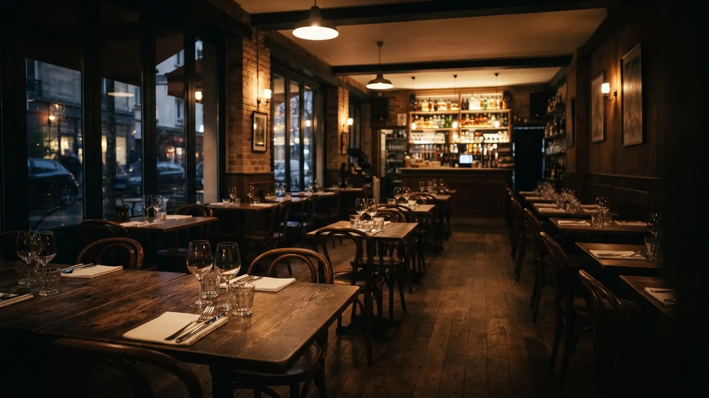

Website
A menu that opens on any phone.
Website, ads, Google, social? Send us a text, and we handle the rest.

At Domin8te Media, good enough is not an option.

A menu that opens on any phone.
We make the Friday ad and run it.
We fill the gap in your feed.
On the map, with the right hours.
Anything that needs your okay comes to you ready to approve.



Domin8te Media
For the person outside your door, checking the menu.
Menu, hours, directions and booking up top, quick to load on two bars of signal. No PDF menus.
Clear enough to read at scrolling speed.
One offer per ad and only a few words, sized for feeds and stories and made to look like your place.
Something worth posting, even in a week when nothing’s new.
Built from the specials board and whatever’s new in the window, with one look from post to post.
For the person a street away, searching “dinner near me”.
An accurate listing, answered reviews and a site written around what locals search for.
Pick the one that sounds like your week. You’ll see our plan, and the form below fills itself in.
Nothing picked yet. The steps build here, from the first fix up.
We open your site on a phone, the way a hungry stranger would, and note everything that gets in the way.
We fix it or rebuild it around what people come for: menu, directions and booking, up top.
When a dish changes, we change the site and your Google listing with it.
We fix your Google listing: menu link, phone number, your photos and the category you’re filed under.
We make the site quick to load and write it around what locals type, like “brunch near me”.
We answer every new review, good or bad, and keep the listing in step with the site.
We use your photos, even a quick phone shot of the special, and design the post when there isn’t one.
We write captions with the dish names off your menu board, so posts sound like your place, not a chain.
We post every week, each post tied to what’s on, like the soup coming back for winter.
We pick the one thing each ad should sell, like a set lunch or a night you want busier.
We make the ads and run them on Facebook, Instagram and Google, using your own ad money.
We swap the ads when what’s on changes, so nobody sees an ad for last month’s special.
We look at your website, Google listing, posts and ads together, and start where it’s worst.
We fix that, then bring the other three into line so they all say the same thing.
You give us access once. After that, the posts, ads, listing changes and review replies are ours.
You tell us what is going wrong, in your own words, on the phone or in the form below.
We look at your site, Google listing, posts and ads together, and say plainly what we would do.
We take on the part you hand over and keep it running every week, the way the rest of this list works.
Within one business day you get a plan back: what needs fixing first, and why. Not a pitch deck with your logo on the cover.
Got it. We’ll read it properly and reply within one business day.
That didn’t go through. Try again, or email karanhelps@domin8temedia.com and we’ll take it from there.
Prefer email? karanhelps@domin8temedia.com

 Squash is on tonight
Squash is on tonight
 Mussel night, Tuesday
Mussel night, Tuesday
 Closed Monday
Closed Monday